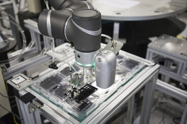
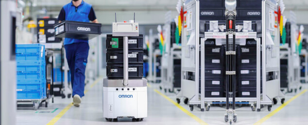

Open hours: Monday - Sunday 8:00AM - 9:00PM
Automation and artificial intelligence (AI) are transforming the efficiency of industrial production, through stronger interactions between man and machine that can boost productivity. A new, promising model for ‘factory harmony’ is based on intelligent, integrated and interactive design for tomorrow's manufacturing processes.
Many people still believe that man and robots can’t work well together – or they’re afraid that machines will eventually replace people. However, the co-existence of people and automated machines and robots is becoming increasingly common in manufacturing companies. Furthermore, digitalisation gives manufacturers an enormous choice of technologies for implementing the factory of the future. For instance, smart networking using AI can be used to convert manufacturing data into strategic information. It also enables the smooth integration of high-precision, high-speed robotics.
The latest innovative production solutions will increase efficiency and flexibility, reduce costs and strengthen a company’s competitive edge. At Omron, we offer collaborative robot solutions that shows how technology can revolutionise the factory floor by promoting harmony between people and machines.
Our robot automates applications traditionally carried out by people. It can be seamlessly integrated into an autonomous mobile robot and can enable the automation of complex tasks. One example is bin picking. The robot quickly sorts different articles and deposits them where they’re needed. A 3D camera locates the items and sends their co-ordinates to the robot, while the software, supported by AI algorithms, performs the advanced calculations required for optimised goods picking. Meanwhile, a mobile robot is responsible for transporting the goods.
This efficient combination of different production processes forms the basis for flexible and reliable production and material handling. It also gives a foretaste of factory harmony, in which integrated, mobile and collaborative robots will work with people to ensure flexible manufacturing and customisation.
Changing consumer behaviour is forcing manufacturers to produce smaller quantities of more product variants. The factory of the future must therefore be able to convert production more rapidly, with smaller runs. The ultimate goal is to deliver personalised products from an agile and networked production line, in which automation is achieved by all devices, machines and solutions operating in an integrated way.
Effective quality control is essential in all production and packaging lines. The early identification of defective products can save time and money, by avoiding costly product recalls, loss of production and possible damage to the brand’s reputation. Quality control is also vital in product packaging for food or medicines: an illegible barcode or wrong expiry date can cause the disposal of faultless products. Stricter legislation has prioritised the unambiguous labelling of all products.

As customer and business needs evolve, the flexibility of the factory floor is a key factor in efficient production. It depends on the mobility and adaptability of the robots used. By combining image processing, motion, control, functional safety and robotics in a single management system, production lines can be more easily adapted to short production runs and changing market requirements. The line layout can be quickly redesigned and the recognition pattern for quality control can be easily updated in the software.
This ensures that different products or variants can be produced and packaged flawlessly. This system is future-proof, because it can be easily adapted to new regulations.
The networking of humans and machines not only boosts efficiency and flexibility; it also demonstrates how people and machines can work in harmony to revolutionise production through the use of artificial intelligence and robotics. This model of factory harmony is breaking new ground for the production methods of the future.
